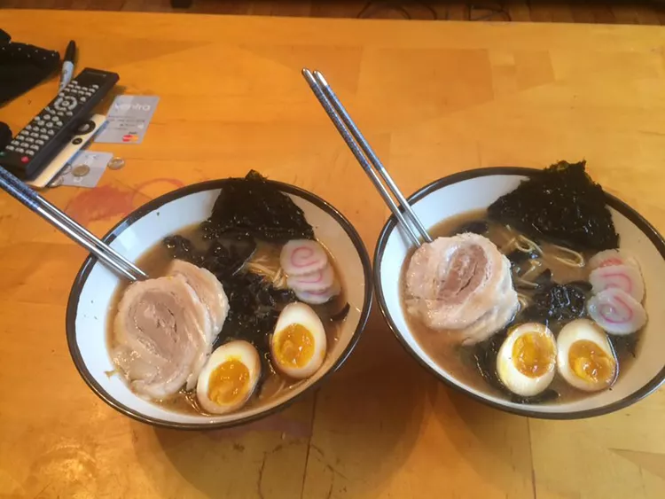

Home
Shoyu Ramen

Description
Shoyu ramen is a Japanese noodle soup with a soy sauce-based broth,
offering a savory and slightly tangy flavor.
The broth is often made with chicken or pork stock and flavored with
garlic, ginger, and green onions.
Served with thin noodles, it's topped with ingredients like chashu pork,
marinated egg, bamboo shoots, and nori.
Shoyu ramen is a comforting and flavorful dish enjoyed worldwide.
Ingredients
Serving Size: 2 people
- 4 cups chicken broth
- 2 cups dashi stock
- 2 tablespoons soy sauce
- 1 tablespoon mirin
- 1 tablespoon sake
- 1 teaspoon sesame oil
- 2 cloves garlic, minced
- 1-inch piece ginger, sliced
- 2 servings fresh ramen noodles
- 2 slices chashu pork (or cooked pork belly)
- 2 soft-boiled eggs
- 1 sheet nori (seaweed), cut into strips
- 2 narutomaki fish cakes, sliced (optional)
- 1/4 cup bamboo shoots
- 2 green onions, sliced
Steps
- In a large pot, heat sesame oil over medium heat. Add garlic and ginger, sauté until fragrant.
- Pour in chicken broth and dashi stock. Bring to a gentle simmer.
- Add soy sauce, mirin, and sake. Stir well and let simmer for 10 minutes.
- Meanwhile, cook ramen noodles according to package instructions. Drain and set aside.
- Remove ginger slices from the broth. Taste and adjust seasoning if needed.
- Divide cooked noodles between two bowls.
- Ladle hot broth over the noodles.
- Top each bowl with chashu pork, soft-boiled egg halves, bamboo shoots, nori strips, narutomaki slices, and green onions.
- Serve immediately and enjoy your homemade shoyu ramen!